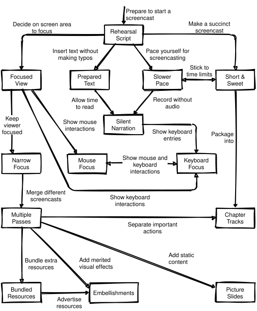

11 Teaching Online
If you use robots to teach, you teach people to be robots.
— variously attributed
Technology has changed teaching and learning many times. Before blackboards were introduced into schools in the early 1800s, there was no way for teachers to share an improvised example, diagram, or exercise with an entire class at once. Cheap, reliable, easy to use, and flexible, blackboards enabled teachers to do things quickly and at a scale that they had only been able to do slowly and piecemeal before. Similarly, hand-held video cameras revolutionized athletics training, just as tape recorders revolutionized music instruction a decade earlier.
Many of the people pushing the internet into classrooms don’t know this history, and don’t realize that theirs is just the latest in a long series of attempts to use machines to teach (Watters 2014). From the printing press through radio and television to desktop computers and mobile devices, every new way to share knowledge has produced a wave of aggressive optimists who believe that education is broken and that technology can fix it. However, ed tech’s loudest advocates have often known less about “ed” than “tech,” and behind their rhetoric, many have been driven more by the prospect of profit than by the desire to empower learners.
Today’s debate is often muddied by confusing “online” with “automated.” Run well, a dozen people working through a problem in a video chat feels like any other small-group discussion. Conversely, a squad of teaching assistants grading hundreds of papers against an inflexible rubric might as well be a collection of Perl scripts. This chapter therefore starts by looking at fully automated online instruction using recorded videos and automatically graded exercises, then explores some alternative hybrid models.
11.1 MOOCs
The highest-profile effort to reinvent education using the internet is the Massive Open Online Course, or MOOC. The term was invented by David Cormier in 2008 to describe a course organized by George Siemens and Stephen Downes. That course was based on a connectivist view of learning, which holds that knowledge is distributed and that learning is the process of finding, creating, and pruning connections.
The term “MOOC” was quickly co-opted by creators of courses more closely resembled the hub-and-spoke model of a traditional classroom, with the teacher at the center defining goals and the learners seen as recipients or replicators of knowledge. Classes that use the original connectivist model are now sometimes referred to as “cMOOCs,” while classes that centralize control are called “xMOOCs.” (The latter is also sometimes called a “MESS,” for Massively Enhanced Sage on the Stage.)
Five years ago, you couldn’t walk across a major university campus without hearing someone talking about how MOOCs would revolutionize education, destroy it, or possibly both. MOOCs would give learners access to a wider range of courses and allow them to work when it was convenient for them rather than fitting their learning to someone else’s schedule.
But MOOCs haven’t been nearly as effective as their more enthusiastic proponents predicted (Ubell 2017). One reason is that recorded content is ineffective for many novices because it cannot clear up their individual misconceptions (Chapter 2): if they don’t understand an explanation the first time around, there usually isn’t a different one on offer. Another is that the automated assessment needed to put the “massive” in MOOC only works well at the lowest levels of Bloom’s Taxonomy (Section 6.2). It’s also now clear that learners have to shoulder much more of the burden of staying focused in a MOOC, that the impersonality of working online can encourage uncivil behavior and demotivate people, and that “available to everyone” actually means “available to everyone affluent enough to have high-speed internet and lots of free time.”
(Margaryan et al. 2015) examined 76 MOOCs on various subjects and found that while the organization and presentation of material was good, the quality of lesson design was poor. Closer to home, (Kim and Ko 2017) studied thirty popular online coding tutorials, and found that they largely taught the same content the same way: bottom-up, starting with low-level programming concepts and building up to high-level goals. Most required learners to write programs and provided some form of immediate feedback, but this feedback was typically very shallow. Few explained when and why concepts are useful (i.e. they didn’t show how to transfer knowledge) or provided guidance for common errors, and other than rudimentary age-based differentiation, none personalized lessons based on prior coding experience or learner goals.
Few terms have been used and abused in as many ways as personalized learning. To most ed tech proponents, it means dynamically adjusting the pace of lessons based on learner performance, so that if someone answers several questions in a row correctly, the computer will skip some of the subsequent questions.
Doing this can produce modest improvements, but better is possible. For example, if many learners find a particular topic difficult, the teacher can prepare multiple alternative explanations of that point rather than accelerating a single path. That way, if one explanation doesn’t resonate, others are available. However, this requires a lot more design work on the teacher’s part, which may be why it hasn’t proven popular. And even if it does work, the effects are likely to be much less than some of its advocates believe. A good teacher makes a difference of 0.1–0.15 standard deviations in end-of-year performance in grade school (Chetty et al. 2014) (see this article for a brief summary). It’s unrealistic to believe that any kind of automation can outdo this any time soon.
So how should the internet be used in teaching and learning tech skills? Its pros and cons are:
- Learners can access more lessons, more quickly, than ever before.
- Provided, of course, that a search engine considers those lessons worth indexing, that their internet service provider and government don’t block it, and that the truth isn’t drowned in a sea of attention-sapping disinformation.
- Learners can access better lessons than ever before,
- unless they are being steered toward second-rate material in order to redistribute wealth from the have-nots to the haves (McMillan Cottom 2017). It’s also worth remembering that scarcity increases perceived value, so as online education becomes cheaper, it will increasingly become what everyone wants for someone else’s children.
- Learners can access far more people than ever before as well.
- But only if those learners actually have access to the required technology, can afford to use it, and aren’t driven offline by harassment or marginalized because they don’t conform to the social norms of whichever group is talking loudest. In practice, most MOOC users come from secure, affluent backgrounds (Hansen and Reich 2015).
- Teachers can get far more detailed insight into how learners work.
- So long as learners are doing things that are amenable to large-scale automated analysis and either don’t object to surveillance in the classroom or aren’t powerful enough for their objections to matter.
Nilson and Goodson (2017) describe ways to accentuate the positives in the list above while avoiding the negatives:
- Make deadlines frequent and well-publicized,
- and enforce them so that learners will get into a work rhythm.
- Keep synchronous all-class activities like live lectures to a minimum
- so that people don’t miss things because of scheduling conflicts.
- Have learners contribute to collective knowledge,
- e.g. take notes together (Section 9.7), serve as classroom scribes, or contribute problems to shared problem sets (Section 5.3).
- Encourage or require learners to do some of their work in small groups
- that do have synchronous online activities such as a weekly online discussion. This helps learners stay engaged and motivated without creating too many scheduling headaches. (See Appendix E for some tips on how to make these discussions fair and productive.)
- Create, publicize, and enforce a code of conduct
- so that everyone can actually take part in online discussions (Section 9.1).
- Use lots of short lesson episodes rather than a handful of lecture-length chunks
- in order to minimize cognitive load and provide lots of opportunities for formative assessment. This also helps with maintenance: if all of your videos are short, you can simply re-record any that need maintenance, which is often cheaper than trying to patch longer ones.
- Use video to engage rather than instruct.
- Disabilities aside (Section 10.3), learners can read faster than you can talk. The exception to this rule is that video is actually the best way to teach people verbs (actions): short screencasts that show people how to use an editor, step through code in a debugger, and so on are more effective than screenshots with text.
- Identify and clear up misconceptions early.
- If data shows that learners are struggling with some parts of a lesson, create alternative explanations of those points and extra exercises for them to practice on.
All of this has to be implemented somehow, which means that you need some kind of teaching platform. You can either use an all-in-one learning management system like Moodle or Sakai, or assemble something yourself using Slack or Zulip for chat, Google Hangouts or appear.in for video conversations, and WordPress, Google Docs, or any number of wiki systems for collaborative authoring. If you are just starting out, pick whatever is easiest to set up and administer and is most familiar to your learners. If faced with a choice, the second consideration is more important than the first: you’re expecting people to learn a lot in your class, so it’s only fair for you to learn how to drive the tools they’re most comfortable with.
Assembling a platform for learning is necessary but not sufficient: if you want your learners to thrive, you need to create a community. Hundreds of books and presentations talk about how to do this, but most are based on their authors’ personal experiences. (Kraut and Resnick 2016) is a welcome exception: while it predates the accelerating descent of Twitter and Facebook into weaponized abuse and misinformation, most of its findings are still relevant. (Fogel 2005) is also full of useful tips about the communities of practice that learners may hope to join; we explore some of its ideas in Chapter 13.
Isaiah Berlin’s 1958 essay “Two Concepts of Liberty” made a distinction between positive liberty, which is the ability to actually do something, and negative liberty, which is the absence of rules saying that you can’t do it. Online discussions usually offer negative liberty (nobody’s stopping you from saying what you think) but not positive liberty (many people can’t actually be heard). One way to address this is to introduce some kind of throttling, such as only allowing each learner to contribute one message per discussion thread per day. Doing this gives those with something to say a chance to say it, while clearing space for others to say things as well.
One other concern people have about teaching online is cheating. Day-to-day dishonesty is no more common in online classes than in face-to-face settings (Beck 2014), but the temptation to have someone else write the final exam, and the difficulty of checking whether this happened, is one of the reasons educational institutions have been reluctant to offer credit for pure online classes. Remote exam proctoring is possible, but before investing in this, read (Lang 2013): it explores why and how learners cheat, and how courses can be structured to avoid giving them a reason to do so.
11.2 Video
A prominent feature of most MOOCs is their use of recorded video lectures. These can be effective: as mentioned in Chapter 8, a teaching technique called Direct Instruction based on precise delivery of a well-designed script has repeatedly been shown to be effective (Stockard et al. 2018). However, scripts for direct instruction have to be designed, tested, and refined very carefully, which is an investment that many MOOCs have been unwilling or unable to make. Making a small change to a web page or a slide deck only takes a few minutes; making even a small change to a short video takes an hour or more, so the cost to the teacher of acting on feedback can be unsupportable. And even when they’re well made, videos have to be combined with activities to be beneficial: (Koedinger et al. 2015) estimated, “…the learning benefit from extra doing…to be more than six times that of extra watching or reading.”
If you are teaching programming, you may use screencasts instead of slides, since they offer some of the same advantages as live coding (Section 8.1). (Chen and Rabb 2009) offers useful tips for creating and critiquing screencasts and other videos; Figure 11.1 (from (Chen and Rabb 2009)) reproduces the patterns that paper presents and the relationships between them. (It’s also a good example of a concept map (Section 3.1).)

So what makes an instructional video effective? (Guo et al. 2014) measured engagement by looking at how long learners watched MOOC videos, and found that:
Shorter videos are much more engaging—videos should be no more than six minutes long.
A talking head superimposed on slides is more engaging than voice over slides alone.
Videos that felt personal could be more engaging than high-quality studio recordings, so filming in informal settings could work better than professional studio work for lower cost.
Drawing on a tablet is more engaging than PowerPoint slides or code screencasts, though it’s not clear whether this is because of the motion and informality or because it reduces the amount of text on the screen.
It’s OK for teachers to speak fairly fast as long as they are enthusiastic.
One thing (Guo et al. 2014) didn’t address is the chicken-and-egg problem: do learners find a certain kind of video engaging because they’re used to it, so producing more videos of that kind will increase engagement simply because of a feedback loop? Or do these recommendations reflect some deeper cognitive processes? Another thing this paper didn’t look at is learning outcomes: we know that learner evaluations of courses don’t correlate with learning Uttl et al. (2017), and while it’s plausible that learners won’t learn from things they don’t watch, it remains to be proven that they do learn from things they do watch.
(Guo et al. 2014)’s research was approved by a university research ethics board, the learners whose viewing habits were monitored almost certainly clicked “agree” on a terms of service agreement at some point, and I’m glad to have these insights. On the other hand, the word “privacy” didn’t appear in the title or abstract of any of the dozens of papers or posters at the conference where these results were presented. Given a choice, I’d rather not know how engaged learners are than foster ubiquitous surveillance in the classroom.
There are many different ways to record video lessons; to find out which are most effective, (Muller et al. 2007) assigned 364 first-year physics learners to online multimedia treatments of Newton’s First and Second Laws in one of four styles:
- Exposition
- concise lecture-style presentation.
- Extended Exposition
- as above with additional interesting information.
- Refutation
- Exposition with common misconceptions explicitly stated and refuted.
- Dialog
- Learner-tutor discussion of the same material as in the Refutation.
Refutation and Dialog produced the greatest learning gains compared to Exposition; learners with low prior knowledge benefited most, and those with high prior knowledge were not disadvantaged. Again, this highlights the importance of directly addressing learners’ misconceptions. Don’t just tell people what is: tell them what isn’t and why not.
11.3 Hybrid Models
Fully automated teaching is only one way to use the web in teaching. In practice, almost all learning in affluent societies has an online component today, either officially or through peer-to-peer back channels and surreptitious searches for answers to homework questions. Combining live and automated instruction allows teachers to use the strengths of both. In a traditional classroom, the teacher can answer questions immediately, but it takes days or weeks for learners to get feedback on their coding exercises. Online, it can take longer for a learner to get an answer, but they can get immediate feedback on their coding (at least for those kinds of exercises we can auto-grade).
Another difference is that online exercises have to be more detailed because they have to anticipate learners’ questions. I find that in-person lessons start with the intersection of what everyone needs to know and expands on demand, while online lessons have to include the union of what everyone needs to know because the teacher isn’t there to do the expanding.
In reality, the distinction between online and in-person is now less important for most people than the distinction between synchronous and asynchronous: do teachers and learners interact in real time, or is their communication spread out and interleaved with other activities? In-person will almost always be synchronous, but online is increasingly a mixture of both:
I think that our grandchildren will probably regard the distinction we make between what we call the real world and what they think of as simply the world as the quaintest and most incomprehensible thing about us.
— William Gibson
The most popular implementation of this blended future today is the flipped classroom, in which learners watch recorded lessons on their own and class time is used for discussion and working through problem sets. Originally described in (King 1993), the idea was popularized as part of peer instruction (Section 9.2) and has been studied intensively over the past decade. For example, (Campbell et al. 2016) compared learners who took an introductory computer science class online with those who took it in a flipped classroom. Completion of (unmarked) practice exercises correlated with exam scores for both, but the completion rate of rehearsal exercises by online learners was significantly lower than lecture attendance rates for in-person learners.
But if recordings are available, will learners still show up to class to do practice exercises? (Nordmann et al. 2017) examined the impact of recordings on both lecture attendance and learners’ performance at different levels. In most cases the study found no negative consequences of making recordings available; in particular, learners didn’t skip lectures when recordings are available (at least, not any more than they usually do). The benefits of providing recordings were greatest for learners early in their careers, but diminished as learners become more mature.
Another hybrid model brings online life into the classroom. Taking notes together is a first step (Section 9.7); pooling answers to multiple choice questions in real time using tools like Pear Deck and Socrative is another. If the class is small—say, a dozen to fifteen people—you can also have all of the learners join a video conference so that they can screenshare with the teacher. This allows them to show their work (or their problems) to the entire class without having to connect their laptop to the projector. Learners can also then use the chat in the video call to post questions for the teacher; in my experience, most of them will be answered by their fellow learners, and the teacher can handle the rest when they reach a natural break. This model helps level the playing field for remote learners: if someone isn’t able to attend class for health reasons or because of family or work commitments, they can still take part on a nearly-equal basis if everyone is used to collaborating online in real time.
I have also delivered classes using real-time remote instruction, in which learners are co-located at 2–6 sites with helpers present while I taught via streaming video (Section C.1). This scales well, saves on travel costs, and allows the use of techniques like pair programming (Section 9.6). What doesn’t work is having one group in person and one or more groups remotely: with the best will in the world, the local participants get far more attention.
11.4 Online Engagement
(Nuthall 2007) found that there are three overlapping worlds in every classroom: the public (what the teacher is saying and doing), the social (peer-to-peer interactions between learners), and the private (inside each learner’s head). Of these, the most important is usually the social: learners pick up as much via cues from their peers as they do from formal instruction.
The key to making any form of online teaching effective is therefore to facilitate peer-to-peer interactions. To aid this, courses almost always have some kind of discussion forum. (Miller 2016) observed that learners use these in very different ways:
…procrastinators are particularly unlikely to participate in online discussion forums, and this reduced participation, in turn, is correlated with worse grades. A possible explanation for this correlation is that procrastinators are especially hesitant to join in once the discussion is under way, perhaps because they worry about being perceived as newcomers in an established conversation. This aversion to jump in late causes them to miss out on the important learning and motivation benefits of peer-to-peer interaction.
(Vellukunnel et al. 2017) analyzes discussion forum posts from 395 CS2 students at two universities by dividing them into four categories:
- Active
- request for help that does not display reasoning and doesn’t display what the student has already tried or already knows.
- Constructive
- reflect students’ reasoning or attempts to construct a solution to the problem.
- Logistical
- course policies, schedules, assignment submission, etc.
- Content clarification
- request for additional information that doesn’t reveal the student’s own thinking.
They found that constructive and logistical questions dominated, and that constructive questions correlated with grades. They also found that students rarely ask more than one active question in a course, and that these don’t correlate with grades. While this is disappointing, knowing it helps set teachers’ expectations: while we might all want our courses to have lively online communities, we have to accept that most won’t, or that most learner-to-learner discussion will take place through channels that they are already using that we may not be part of.
(Gulley 2004) describes an online coding contest that combines collaboration and competition. The contest starts when a problem description is posted along with a correct but inefficient solution. When it ends, the winner is the person who has made the greatest overall contribution to improving the performance of the overall solution. All submissions are in the open, so that participants can see one another’s work and borrow ideas from each other. As the paper shows, the final solution is almost always a hybrid borrowing ideas from many people.
(Battestilli et al. 2018) described a small-scale variation of this in an introductory computing class. In stage one, each learner submitted a programming project individually. In stage two, learners were paired to create an improved solution to the same problem. The assessment indicates that two-stage projects tend to improve learners’ understanding and that they enjoyed the process. Projects like these not only improve engagement, they also give participants more experience building on someone else’s code.
Discussion isn’t the only way to get learners to work together online. (Paré and Joordens 2008) and (Kulkarni et al. 2013) report experiments in which learners grade each other’s work, and the grades they assign are then compared with the grades given by graduate-level teaching assistants or other experts. Both found that learner-assigned grades agreed with expert-assigned grades as often as the experts’ grades agreed with each other, and that a few simple steps (such as filtering out obviously unconsidered responses or structuring rubrics) decreased disagreement even further. And as discussed in Section 5.3, collusion and bias are not significant factors in peer grading.
The most common way to measure the validity of feedback is to compare learners’ grades to experts’ grades, but calibrated peer review (Section 5.3) can be equally effective. Before asking learners to grade each others’ work, they are asked to grade samples and compare their results with the grades assigned by the teacher. Once the two align, the learner is allowed to start giving grades to peers. Given that critical reading is an effective way to learn, this result may point to a future in which learners use technology to make judgments, rather than being judged by technology.
One technique we will definitely see more of in coming years is online streaming of live coding sessions Haaranen (2017). This has most of the benefits discussed in Section 8.1, and when combined with collaborative note-taking (Section 9.7) it can be a close approximation to an in-class experience.
Looking even further ahead, (IJsselsteijn et al. 2000) identified four levels of online presence, from realism (we can’t tell the difference) through immersion (we forget the difference) and involvement (we’re engaged but aware of the difference) to suspension of disbelief (we are doing most of the work). Crucially, they distinguish physical presence, which is the sense of actually being somewhere, and social presence, which is the sense of being with others. The latter is more important in most learning situations, and again, we can foster it by using learners’ everyday technology in the classroom. For example, (Deb et al. 2018) found that real-time feedback on in-class exercises using learners’ own mobile devices improved concept retention and learner engagement while reducing failure rates.
Online and asynchronous teaching are both still in their infancy. Centralized MOOCs may prove to be an evolutionary dead end, but there are still many other promising models to explore. In particular, (Brookfield and Preskill 2016) describes fifty ways that groups can discuss things productively, only a handful of which are widely known or implemented online. If we go where our learners are technologically rather than requiring them to come to us, we may wind up learning as much as they do.
11.5 Exercises
11.5.1 Two-Way Video (pairs/10 min)
Record a 2–3 minute video of yourself doing something, then swap machines with a partner so that each of you can watch the other’s video at 4x speed. How easy is it to follow what’s going on? What if anything did you miss?
11.5.2 Viewpoints (individual/10 min)
According to (Iriberri and Leroy 2009), different disciplines focus on different factors affecting the success or otherwise of online communities:
- Business
- customer loyalty, brand management, extrinsic motivation.
- Psychology
- sense of community, intrinsic motivation.
- Sociology
- group identity, physical community, social capital, collective action.
- Computer Science
- technological implementation.
Which of these perspectives most closely corresponds to your own? Which are you least aligned with?
11.5.3 Helping or Harming (small groups/30 min)
Susan Dynarski’s article in the New York Times explains how and why schools are putting students who fail in-person courses into online courses, and how this sets them up for even further failure. Read the article and then:
In small groups, come up with 2–3 things that schools could do to compensate for these negative effects and create rough estimates of their per-learner costs.
Compare your suggestions and costs with those of other groups. How many full-time teaching positions do you think would have to be cut in order to free up resources to implement the most popular ideas for a hundred learners?
As a class, do you think that would be a net benefit for the learners or not?
Budgeting exercises like this are a good way to tell who’s serious about educational change. Everyone can think of things they’d like to do; far fewer are willing to talk about the tradeoffs needed to make change happen.